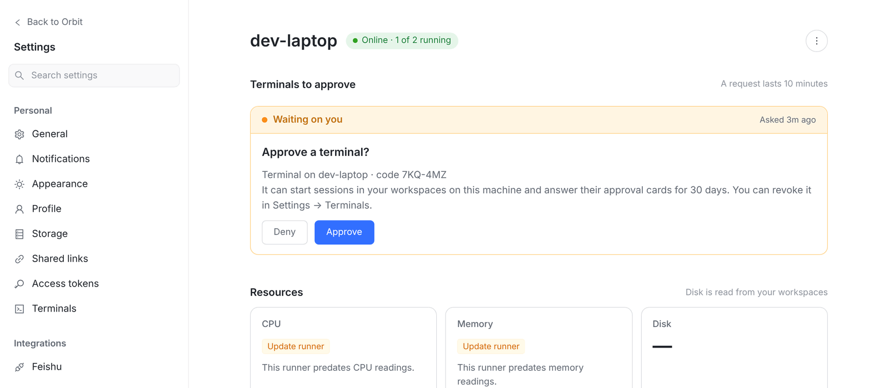
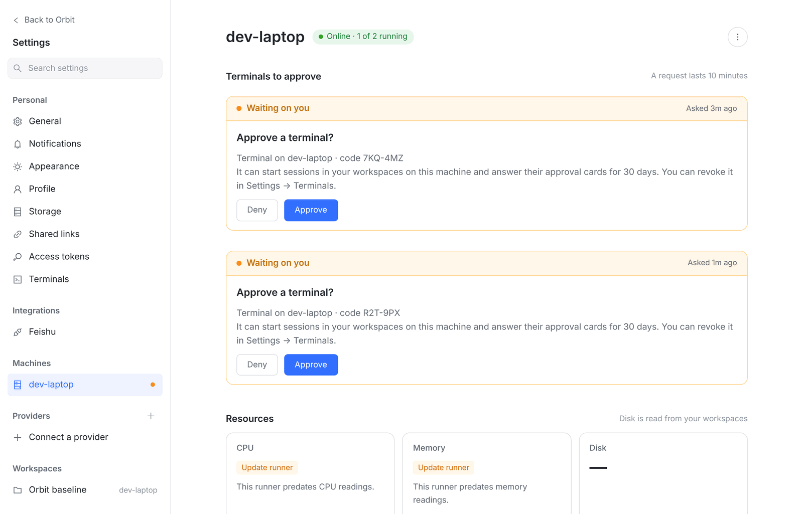

① 机器页上的待批区 · 0 / 1 / 多条
Web：没有机器列表页，每台机器就是设置侧栏 Machines 下的一行，各有自己的页。所以待批区放在那台机器的页上，在标题下面、Resources 前面，节名 Terminals to approve，右边注 A request lasts 10 minutes。
iOS / macOS / Android：已经有一个列表页 Machines & models，它最上面本来就有一节 Needs you（今天放 "{machine} is offline" 这类事）。卡就放进这一节，所有机器的待批都在这里；Settings 首页那一行的数值照今天的规则变琥珀 "1 needs you"。每台机器自己的页也在标题下画它自己的那几张（同一份读取，按 runnerId 过滤）。
卡原样搬：TerminalApproveCard 不改字、不改按钮。0 条时这一节整个不画，和今天 Needs you 节、Web 的 Needs Attention 卡的规矩一样（不留一个永远空着的标题）。
Web 真实 · main 构建，卡是它自己的 TerminalApproveCard，capture 时挪进机器页
0 条

和今天的机器页一模一样；侧栏点是绿的。
1 条

标题下一节 Terminals to approve；侧栏 dev-laptop 的点变琥珀（settings-dot--attention，读作 "Needs you"，今天已有）。锚点 #terminal-requests，needs-you 那一条和链接都落到这里。
多条（同一台机器 2 条）

一条一张卡，最早的在上（照服务端 createdAt 顺序）。每台机器最多 3 条（TERMINAL_LOGIN_OPEN_MAX）。几台机器都有时，每台各在自己的页上，侧栏各自亮点。
iOS（手画，照上面真实的 Settings / 机器列表量）· macOS 同一份视图
Android（手画，跟 iOS）· macOS